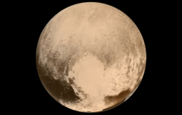

Általánosságban
2006. augusztus 24-éig a Naprendszer kilencedik, legkisebb bolygójaként tartották számon, ma pedig (az Eris után) a második legnagyobb törpebolygónak számít. Azóta a Neptunusz a Naprendszer legtávolabbi bolygója. A Föld holdjánál kisebb, magas hőmérsékleten összetömörült anyagokból álló, nitrogén–metán–szén-monoxid légkörű törpebolygó. Bolygó besorolását azért vesztette el, mert a Kuiper-övben egy olyan égitestet fedeztek fel, amely közel ugyanakkora. Ez az Eris törpebolygó, melynek felfedezése után a Nemzetközi Csillagászati Unió új bolygó-meghatározást alkotott, amely az Erist – és így a Plutót is – a bolygóktól külön kategóriába helyezi.
Jellemzői

A Pluto tömege csak egyötöde a Holdénak, valamint átmérője is kisebb. Felszínét fagyott nitrogén borítja, mely napközelben felenged és vékony légkört alkot. Felszíne geológiailag aktív, gleccserek és jégvulkánok is találhatók rajta. Hegységek és síkságok tarkítják. A Sputnik Planitia nevű területen dűnék figyelhetők meg, amiket fagyott, homokszem méretű metándarabkák alakítanak és formálnak. A dűnék nagyjából 2000 km² területet fednek le. Bár a légköre vékony, de a felszínt aktívan formálják a szelek, amik legfeljebb 35 km/h sebességgel fújnak. A New Horizons űrszonda műszereinek mérései alapján feltételezhető, hogy a felszín alatt folyékony vízóceán található. Ezt a felszíntől egy gázréteg választja el, amit gázhidrátok (más néven klatrát-hidrátok) töltenek ki, és aminek a hőszigetelő hatása megvédi az alatta lévő óceánt a teljes befagyástól. Ez a gázréteg nagyrészt metánból áll, és jégszerű, kásás állapotú.
Honnan jött a neve?
A kisbolygó-elnevezési konvencióknak megfelelően a Magyar Csillagászati Egyesület a 134340 Pluto, illetve (134340) Pluto alakot ajánlja és használja a magyarosított Plútó helyett, mióta azt törpebolygó kategóriába sorolta a Nemzetközi Csillagászati Unió. A Földrajzinév-bizottság 2010-ben, illetve a Magyar Tudományos Akadémia Nyelvtudományi Intézetének 2015-ös szabályzata a már rögzült Plútó alakról határozott. Jelenleg tehát mindkét írásmód megalapozott, jelen oldalon a Magyar Csillagászati Egyesület által javasolt, latinos formát használjuk, amely a törpebolygók egységes írásmódját követi.